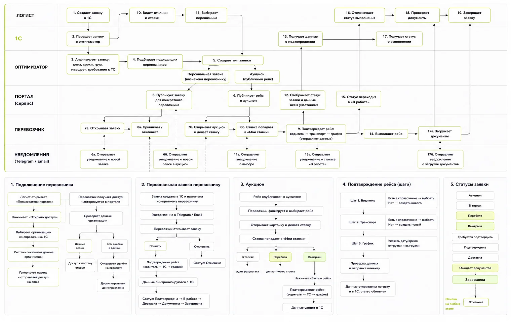

01
Два пути, одна статусная модель
Проблема
Рейс доходит до перевозчика двумя путями: через аукцион или персональной заявкой. Если у каждого пути свои статусы, логист и 1С перестают понимать, где рейс.
Решение
Общая цепочка статусов от аукциона до завершения, с отменой на любом этапе. Персональная заявка входит в неё сразу на шаге подтверждения.
Почему
Статус — то, что видят все три роли и что уходит в 1С. Одна модель значит одно понимание рейса у всех.
Статусы заявкиотмена на любом этапе
- 01Аукцион
- 02В торгах
- 03Перебита или выигрыш
- 04Требуется подтвердить
- 05Подтверждена
- 06Доставка
- 07Ожидает документов
- 08Завершена
